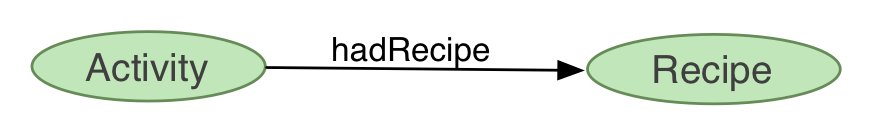
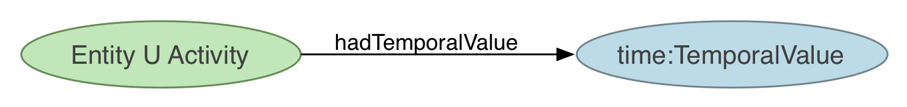
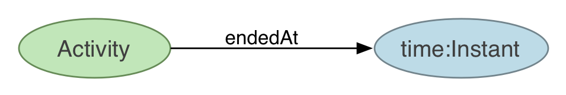
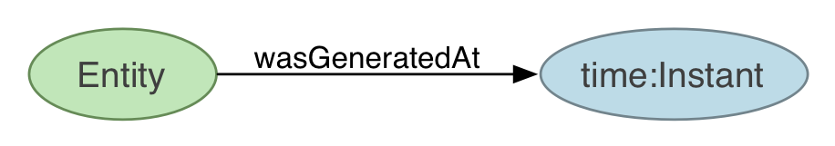
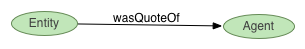
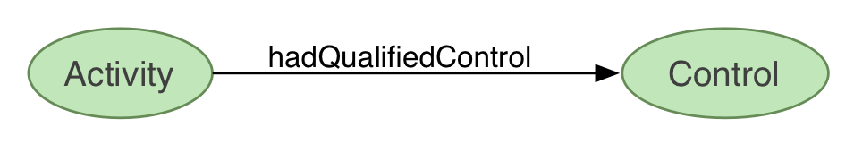
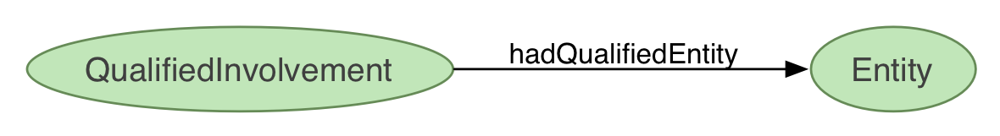
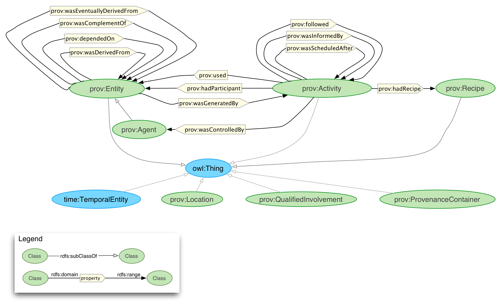

The PROV Ontology: Model and Formal Semantics
W3C Working Draft 13 December 2011
- This version:
- http://www.w3.org/TR/2011/WD-prov-o-20111213/
- Latest published version:
- http://www.w3.org/TR/prov-o/
- Latest editor's draft:
- http://dvcs.w3.org/hg/prov/raw-file/default/ontology/ProvenanceFormalModel.html
- Editors:
- Satya Sahoo, Case Western Reserve University, USA
- Deborah McGuinness, Rensselaer Polytechnic Institute, USA
- Authors:
- (In alphabetical order)
- Khalid Belhajjame, University of Manchester, UK
- James Cheney, University of Edinburgh, UK
- Daniel Garijo, Universidad Politécnica de Madrid, Spain
- Timothy Lebo, Rensselaer Polytechnic Institute, USA
- Stian Soiland-Reyes, University of Manchester, UK
- Stephan Zednik, Rensselaer Polytechnic Institute, USA
Copyright © 2011 W3C® (MIT, ERCIM, Keio), All Rights Reserved. W3C liability, trademark and document use rules apply.
Abstract
The PROV Ontology (also PROV-O) encodes the PROV Data Model [PROV-DM] in the OWL2 Web Ontology Language (OWL2). The PROV ontology consists of a set of classes, properties, and restrictions that can be used to represent provenance information. The PROV ontology can also be specialized to create new classes and properties for modeling provenance information specific to different domain applications. The PROV ontology supports a set of entailments based on OWL2 formal semantics and provenance specific inference rules. The PROV ontology is available for download as a separate OWL2 document.
Status of This Document
This section describes the status of this document at the time of its publication. Other documents may supersede this document. A list of current W3C publications and the latest revision of this technical report can be found in the W3C technical reports index at http://www.w3.org/TR/.
This specification defines the PROV Ontology as the normative representation of the PROV Data Model using the Web Ontology Language (OWL2). This document is part of a set of specifications being created to address the issue of provenance interchange in Web applications. This document is accompanied by (1) the PROV Data Model, (2) the PROV Access and Query, and (3) the Primer documents.
This document was published by the Provenance Working Group as a First Public Working Draft. This document is intended to become a W3C Recommendation. If you wish to make comments regarding this document, please send them to public-prov-wg@w3.org (subscribe, archives). All feedback is welcome.
Publication as a Working Draft does not imply endorsement by the W3C Membership. This is a draft document and may be updated, replaced or obsoleted by other documents at any time. It is inappropriate to cite this document as other than work in progress.
This document was produced by a group operating under the 5 February 2004 W3C Patent Policy. W3C maintains a public list of any patent disclosures made in connection with the deliverables of the group; that page also includes instructions for disclosing a patent. An individual who has actual knowledge of a patent which the individual believes contains Essential Claim(s) must disclose the information in accordance with section 6 of the W3C Patent Policy.
1. Introduction
PROV Ontology (also PROV-O) defines the normative modeling of the PROV Data Model [PROV-DM] using the W3C OWL2 Web Ontology Language. This document specification describes the set of classes, properties, and restrictions that constitute the PROV ontology, which have been introduced in the PROV Data Model [PROV-DM]. This ontology specification provides the foundation for implementation of provenance applications in different domains using the PROV ontology for representing, exchanging, and integrating provenance information. Together with the PROV Access and Query [PROV-PAQ] and PROV Data Model [PROV-DM], this document forms a framework for provenance information interchange and management in domain-specific Web-based applications.
The PROV ontology classes and properties are defined such that they can not only be used directly to represent provenance information, but also can be specialized for modeling application-specific provenance details in a variety of domains. Thus, the PROV ontology is expected to be both directly usable in applications as well as serve as a reference model for creation of domain-specific provenance ontology and thereby facilitate interoperable provenance modeling. This document uses an example provenance scenario introduced in the PROV Data Model [PROV-DM] to demonstrate the use PROV-O classes and properties to model provenance information.
Finally, this document describes the formal semantics of the PROV ontology using the OWL2 semantics, [OWL2-DIRECT-SEMANTICS], [OWL2-RDF-BASED-SEMANTICS], and a set of provenance-specific inference rules. This is expected to support provenance implementations to automatically check for consistency of provenance information represented using PROV ontology and explicitly assert implicit provenance knowledge.
The key words "must", "must not", "required", "shall", "shall not", "should", "should not", "recommended", "may", and "optional" in this document are to be interpreted as described in [RFC2119].
1.1 Guide to this Document
This document is intended for provide an understanding of the PROV ontology and how it can be used by different applications to represent their provenance information. The intended audience of this document include users who are new to provenance modeling as well as experienced users who would like their provenance model compatible with the PROV ontology to facilitate standardization. This document assumes a basic understanding of the W3C RDF(S) and OWL2 specification. Readers are referred to the OWL2 and RDF(S) documentations, starting with the [OWL2-PRIMER] and [RDF-PRIMER], for further details about the OWL2 and RDF(S) specifications respectively.
Section 2 describes the mapping of the PROV Data Model [PROV-DM] to the PROV ontology. Section 3 introduces the classes and properties of the PROV ontology. Section 4 describes the approach used to specialize the PROV ontology create a domain specific ontology for an example provenance scenario introduced in the PROV Data Model [PROV-DM]. The PROV ontology supports a set of provenance entailments and these are described in Section 5.
2. PROV Ontology
The PROV Data Model [PROV-DM] introduces a minimal set of concepts to represent provenance information in a variety of application domains. This document maps the PROV Data Model to PROV Ontology using the OWL2 ontology language, which facilitates a fixed interpretation and use of the PROV Data Model concepts based on the formal semantics of OWL2 [OWL2-DIRECT-SEMANTICS] [OWL2-RDF-BASED-SEMANTICS].
The PROV Ontology can be used directly in a domain application, though many domain applications may require specialization of PROV-O Classes and Properties for representing domain-specific provenance information. We briefly introduce some of the OWL2 modeling terms that will be used to describe the PROV ontology. An OWL2 instance is an individual object in a domain of discourse, for example a person named Alice or a car, and a set of individuals sharing a set of common characteristics is called a class. Person and Car are examples of classes representing the set of individual persons and cars respectively. The OWL2 object properties are used to link individuals, classes, or create a property hierarchy. For example, the object property "hasOwner" can be used to link car with person. The OWL2 datatype properties are used to link individuals or classes to data values, including XML Schema datatypes [XMLSCHEMA-2].
The PROV Data Model document [PROV-DM] introduces an example provenance scenario describing the creation of crime statistics file stored on a shared file system and edited by journalists Alice, Bob, Charles, David, and Edith. This scenario is used as a running example in this document to describe the PROV ontology classes and properties, the specialization mechanism, and the entailments supported by the PROV ontology.
2.1 Mapping the PROV-DM terms to PROV Ontology
The PROV Data Model [PROV-DM] uses an Abstract Syntax Notation (ASN) to describe the set of provenance terms that are used to construct the PROV ontology. There are a number of differences between the PROV-DM ASN and the Semantic Web RDF, RDFS and OWL2 technologies; hence the approach used to model the provenance terms in PROV ontology differ, partially or significantly, from the PROV-DM approach.
For example, the notion of "expressions" used in the PROV-DM map to RDF triple assertions in PROV-O. Similarly, the PROV-DM discusses the use of "Qualifier" to assert additional information about provenance terms. Following the general knowledge representation practices and OWL2 ontologies specifically, the PROV ontology specializes a given provenance term to create either a sub class or sub property to represent "additionally" qualified terms. Throughout this document, we explicitly state the difference, if any, between the PROV-DM term and PROV ontology term.
In addition, RDF is strictly monotonic and "...it cannot express closed-world assumptions, local default preferences, and several other commonly used non-monotonic constructs."[
RDF-MT], but the PROV-DM seems to introduce the notion of non-monotonic assertions through "Account" construct [
PROV-DM]. For example, Account description in PROV-DM states that it "It provides a scoping mechanism for expression identifiers and for some contraints (such as generation-unicity and derivation-use)."
2.2 OWL2 Syntax Used in this Document
This document uses the RDF/XML syntax, which is the mandatory syntax supported by all OWL2 syntax [OWL2-PRIMER] to represent the PROV ontology. Provenance assertions using PROV-O can use any of the RDF syntax defined in the RDF specification [RDF-PRIMER].
2.3 Namespace and OWL2 version
The corresponding OWL2 version of this PROV Ontology is available at [PROV-Ontology-Namespace] and as ProvenanceOntology.owl. The namespace for the PROV ontology and all terms defined in this document is http://www.w3.org/ns/prov-o/ [PROV-Ontology-Namespace] and is in this document denoted by the prefix prov.
It has been suggested that [
PROV-DM] and PROV-O should instead use the namespace
http://www.w3.org/ns/prov/ for terms that are common in both models. This is
ISSUE-90
3. PROV Ontology: Classes and Properties
We now introduce the classes and properties that constitute the PROV ontology. We first give a textual description of each ontology term, followed by OWL2 syntax representing the ontology term and an example use of the class in the provenance scenario.
3.1 Classes
The PROV ontology consists of classes that can be organized into a hierarchical structure using the rdfs:subClassOf property.

Note: CamelBack notation is used for class names
3.1.1 Entity
Class Description
Entity is defined to be "An Entity represents an identifiable characterized thing." [PROV-DM]
OWL syntax
prov:Entity rdfs:subClassOf owl:Thing.
Example
Example of instances of class Entity from the provenance scenario are files with identifiers e1 and e2. The RDF/XML syntax for asserting that e1 is an instance of Entity is given below.
<rdf:Description rdf:about="http://www.example.com/crimeFile#e1">
<rdf:type rdf:resource="http://www.w3.org/ns/prov-o/Entity"/>
</rdf:Description>
Additional assertions can be made about the Entity instances that describe additional attributes of the entities. Following common knowledge representation approach, the Entity class can be specialized to create multiple sub classes, using the rdfs:subClassOf property, representing distinct categories of entities using additional characterizing attributes (as defined in the [PROV-DM]). The additional attributes should use an appropriate namespace, and the new sub classes may be introduced by application-specific provenance ontologies.
Example
<rdf:Description rdf:about="http://www.example.com/crimeFile#e2">
<rdf:type rdf:resource="http://www.example.com/crime#CrimeFile">
</rdf:Description>
<rdf:Description rdf:about="http://www.example.com/crime#CrimeFile">
<rdfs:subClassOf rdf:resource="http://www.w3.org/ns/prov-o/Entity"/>
</rdf:Description>
3.1.2 Activity
Class Description
Activity is defined to be "an identifiable activity, which performs a piece of work." [PROV-DM]
OWL syntax
prov:Activity rdfs:subClassOf owl:Thing.
Example
Example instances of the class Activity (from the provenance scenario ) are "file creation" (pe0) and "file editing" (pe2) . The RDF/XML syntax for asserting that act2 is an instance of Activity is given below.
<rdf:Description rdf:about="http://www.example.com/crimeFile#act2">
<rdf:type rdf:resource="http://www.w3.org/ns/prov-o/Activity"/>
</rdf:Description>
act2 is an instance of class :Emailing, which is defined to be sub-class of class prov:Activity in the CrimeFile ontology. Hence, using standard RDFS entailment allows us to infer that act2 is also an instance of prov:Activity.
3.1.3 Agent
Class Description
Agent is defined to be a "characterized entity capable of activity" [PROV-DM]
OWL syntax
prov:Agent rdfs:subClassOf prov:Entity.
Example
Example of instances of class Agent from the provenance scenario are Alice and Edith. The RDF/XML syntax for asserting that Alice is an instance of Agent is given below.
<rdf:Description rdf:about="http://www.example.com/crimeFile#Alice">
<rdf:type rdf:resource="http://www.w3.org/ns/prov-o/Agent"/>
</rdf:Description>
Similar to example for Entity, both Alice and Edith are instances of class Journalist, which is defined to be "sub-class" of class Agent in the CrimeFile ontology. Hence, using standard RDFS entailment allows us to infer that both Alice and Edith are also instances of Agent.
3.1.4 TemporalEntity
Class Description
TemporalEntity represents temporal information about entities in the Provenance model. This class has been re-used from the OWL Time ontology [OWL-TIME]. The PROV ontology also models the two sub classes of TemporalEntity, namely Instant and Interval.
The Instant class represents "point-line" temporal information that have "no interior points" [OWL-TIME]. The Interval class represents temporal information that have a non-zero duration [OWL-TIME]
OWL syntax
time:TemporalEntity rdfs:subClassOf owl:Thing.
Example
Example of instances of class TemporalEntity from the provenance scenario are t and t+1. t+1 is associated with the instance of Activity act2. The instances of TemporalEntity are linked to instances of Entity or Activity classes by the hadTemporalValue property that is described later in this document.
The RDF/XML syntax for this asserting that t+1 is an instance of class TemporalEntity and t+1 is associated with act2 is given below.
<rdf:Description rdf:about="http://www.example.com/crimeFile#act2">
<prov:hadTemporalValue rdf:about="http://www.example.com/crimeFile#t+1">
<rdf:type rdf:resource="http://www.w3.org/2006/time#TemporalEntity"/>
</prov:hadTemporalValue>
</rdf:Description>
3.1.5 ProvenanceContainer
Class Description
ProvenanceContainer is defined to be an aggregation of provenance assertions. A provenance container should have an URI associated with it. The ProvenanceContainer class can also be used to model the PROV-DM concept of Account.
OWL syntax
prov:ProvenanceContainer rdfs:subClassOf owl:Thing.
Examples of instance of class ProvenanceContainer includes a RDF graph containing set of assertions describing the provenance of a car, such as its manufacturer, date of manufacture, and place of manufacture.
<rdf:Description rdf:about="http://www.example.com/crimeFile#ProvenanceContainer1">
<rdf:type rdf:resource="http://www.w3.org/ns/prov-o/ProvenanceContainer"/>
<cf:contains rdf:resource="http://www.example.com/crimeFile#Statement1"/>
<cf:contains rdf:resource="http://www.example.com/crimeFile#Statement2"/>
<cf:assertedBy rdf:resource="http://www.example.com/crimeFile#Alice"/>
</rdf:Description>
According to the definitions of ProvenanceContainer and Account, both contain a set of provenance assertions and have an identifier. Hence, ProvenanceContainer class can also be used to create instances of accounts.
Scope and Identifiers.
This is
ISSUE-81.
3.1.5.1 Modeling ProvenanceContainer and Account as RDF Graph
If a RDF graph contains a set of RDF assertions then, (a) if an explicit asserter is associated with the RDF graph it corresponds to the term "Account" in PROV-DM, and (b) if an asserted is not associated with the RDF graph it corresponds to the term "ProvenanceContainer" in PROV-DM.
3.1.6 Location
Class Description
Location is defined to be "is an identifiable geographic place (ISO 19112)." [PROV-DM]
OWL syntax
prov:Location rdfs:subClassOf owl:Thing.
Example of instances of class Location from the provenance scenario is the location of the crime file in the shared directory /share with file path /shared/crime.txt. The RDF/XML syntax for asserting that the location of the crime file is the shared directory.
<cf:hasLocation>
<rdf:Description rdf:about="http://www.example.com/crimeFile#sharedDirectoryLocation1">
<rdf:type rdf:resource="http://www.w3.org/ns/prov-o/Location"/>
<cf:hasFilePath rdf:datatype="http://www.w3.org/2001/XMLSchema#string">/share/crime.txt</cf:hasFilePath>
</rdf:Description>
</cf:hasLocation>
Need to clarify whether "geographic" includes "geospatial"?
3.1.7 QualifiedInvolvement
Class Description
The QualifiedInvolvement class represents an n-ary property to capture qualifying information related to the the use, generation, control, and participation.
OWL syntax
prov:QualifiedInvolvement rdfs:subClassOf owl:Thing.
3.1.7.1 Usage
Class Description
The Usage class represents an n-ary property to capture qualifying information related to the use of Entity by Activity.
OWL syntax
prov:Usage rdfs:subClassOf prov:QualifiedInvolvement.
Example
Example of instances of class Usage from the provenance scenario provenance scenario ??? is given below.
<rdf:Description rdf:about="http://www.example.com/crimeFile#u1">
<rdf:type rdf:resource="http://www.w3.org/ns/prov-o/Usage"/>
<prov:hadQualifiedEntity rdf:resource="http://www.example.com/crimeFile#Bob"/>
</rdf:Description>
3.1.7.2 Participation
Class Description
The Participation class represents an n-ary property to capture qualifying information related to the participation of Entity in Activity.
OWL syntax
prov:Participation rdfs:subClassOf prov:QualifiedInvolvement.
Example
Example of instances of class Participation from the provenance scenario provenance scenario ??? is given below.
<rdf:Description rdf:about="http://www.example.com/crimeFile#p1">
<rdf:type rdf:resource="http://www.w3.org/ns/prov-o/Participation"/>
<prov:hadQualifiedEntity rdf:resource="http://www.example.com/crimeFile#Bob"/>
</rdf:Description>
3.1.7.3 Control
Class Description
The Control class represents an n-ary property to capture qualifying information related to the control of Activity by Agent.
OWL syntax
prov:Control rdfs:subClassOf prov:QualifiedInvolvement.
Example
Example of instances of class Control from the provenance scenario provenance scenario ??? is given below.
<rdf:Description rdf:about="http://www.example.com/crimeFile#c1">
<rdf:type rdf:resource="http://www.w3.org/ns/prov-o/Control"/>
<prov:hadQualifiedEntity rdf:resource="http://www.example.com/crimeFile#Bob"/>
</rdf:Description>
3.1.7.4 Generation
Class Description
The Generation class represents an n-ary property to capture qualifying information related to the generation of Entity by Activity.
OWL syntax
prov:Generation rdfs:subClassOf prov:QualifiedInvolvement.
Example
Example of instances of class Generation from the provenance scenario ??? is given below.
<rdf:Description rdf:about="http://www.example.com/crimeFile#g1">
<rdf:type rdf:resource="http://www.w3.org/ns/prov-o/Generation"/>
<prov:hadQualifiedEntity rdf:resource="http://www.example.com/crimeFile#Bob"/>
</rdf:Description>
3.1.8 Recipe
Class Description
Recipe represents the specification of a Activity. PROV ontology does not define the different types of recipes that can be created by provenance applications in different domains.
OWL syntax
prov:Recipe rdfs:subClassOf owl:Thing.
Example
An example of recipe from the provenance scenario may be the editing protocol followed by the journalists to edit a news report.
<rdf:Description rdf:about="http://www.example.com/crimeFile#news_editing">
<rdf:type rdf:resource="http://www.w3.org/ns/prov-o/Activity"/>
<prov:hadRecipe rdf:resource="http://www.example.com/crimeFile#NewsReportEditingProtocol"/>
</rdf:Description>
3.1.9 Role
Class Description
Role class models additional information about Entity or Activity class with respect to the QualifiedInvolvement class [PROV-DM]
OWL syntax
prov:Role rdfs:subClassOf owl:Thing.
Example
Example of instances of class Role from the provenance scenario are author (for Alice) and save (for act1). The RDF/XML syntax for asserting that Alice played a role of author in the usage u1 (instance of class Usage) of file e1 in the activity of adding content.
<rdf:Description rdf:about="http://www.example.com/crimeFile#u1">
<rdf:type rdf:resource="http://www.w3.org/ns/prov-o/Usage"/>
<prov:hadRole rdf:resource="www.example.com/crimeFile#author"/>
</rdf:Description>
It is not clear how two roles can be modeled using the QualifiedInvolvement class-based approach, where an Entity plays a role of "author", while the Activity plays the role of "save" (from the
provenance scenario ).
3.1.10 Classes under Discussion
Temporary section for terms not part of "core" ontology.
3.1.10.1 Time
Class Description
Time is subclass of time:Instant
from [OWL-TIME] which requires that the time is defined
using the time:inXSDDateTime property. This
class used with startedAt and other subproperties
of hasTemporalValue ensures compatibility with xsd:dateTime literals
expressions in [PROV-DM] ASN and other serialisations.
c
3.2 Object Properties
The PROV ontology has the following object properties.
Note: Names of properties starts with a verb in lower case followed by verb(s) starting with upper case
3.2.1 wasGeneratedBy
The wasGeneratedBy property links the Entity class with the Activity class.
Note: No arity constraints are assumed between Entity and Activity
Example
Example of wasGeneratedBy property from the provenance scenario is e1 wasGeneratedBy act0. The RDF/XML syntax for asserting this information is given below.
<rdf:Description rdf:about="http://www.example.com/crimeFile#e1">
<rdf:type rdf:resource="http://www.w3.org/ns/prov-o/Entity"/>
<prov:wasGeneratedBy>
<rdf:Description rdf:about="http://www.example.com/crimeFile#act0">
<rdf:type rdf:resource="http://www.w3.org/ns/prov-o/Activity"/>
</rdf:Description>
<prov:wasGeneratedBy>
</rdf:Description>
3.2.2 wasRevisionOf
The wasRevisionOf property links two instances of Entity class, where one instance is a revision of another instance, and there is explicit role of an Agent in asserting this information.
Example
Example of wasRevisionOf property from the provenance scenario is e3 wasRevisionOf e2. The RDF/XML syntax for asserting this information is given below.
<rdf:Description rdf:about="http://www.example.com/crimeFile#e3">
<rdf:type rdf:resource="http://www.w3.org/ns/prov-o/Entity"/>
<prov:wasRevisionOf>
<rdf:Description rdf:about="http://www.example.com/crimeFile#e2">
<rdf:type rdf:resource="http://www.w3.org/ns/prov-o/Entity"/>
</rdf:Description>
<prov:wasRevisionOf>
</rdf:Description>
Can instance of Agents be reasoning agents that infer the information that one Entity instance is a revision of another Entity instance and then asserts the information? In other words, is assertion after inference supported by this property?
3.2.3 wasDerivedFrom
The wasDerivedFrom property links two instances of Entity class, where "some characterized entity is transformed from, created from, or affected by another characterized entity." [PROV-DM]
Example
Example of wasDerivedFrom property from the provenance scenario is e3 wasDerivedFrom e2. The RDF/XML syntax for asserting this is given below.
<rdf:Description rdf:about="http://www.example.com/crimeFile#e3">
<prov:wasDerivedFrom rdf:resource="http://www.example.com/crimeFile#e2"/>
</rdf:Description>
Should derivation have a time? Which time? This is
ISSUE-43.
Should we specifically mention derivation of agents? This is
ISSUE-42.
3.2.4 wasEventuallyDerivedFrom
This object property is used to link two instances of Entity class that "...are not directly used and generated respectively" by a single instance of Activity class [PROV-DM].

Example
Example of wasEventuallyDerivedFrom property from the provenance scenario is e5 wasEventuallyDerivedFrom e2. The RDF/XML syntax for asserting this is given below.
<rdf:Description rdf:about="http://www.example.com/crimeFile#e5">
<prov:wasEventuallyDerivedFrom rdf:resource="http://www.example.com/crimeFile#e2"/>
</rdf:Description>
Is the current definition of wasEventuallyDerivedFrom inconsistent with definition of wasDerivedFrom? This is
ISSUE-122 and
ISSUE-126
3.2.5 dependedOn
The dependedOn property links two instances of Entity class to model the derivation of one instance from another instance. This is a transitive property, in other words if an Entity instance a1 dependedOn a2 and a2 dependedOn a3, then a1 dependedOn a3 is also true.

Example
Example of dependedOn property from the provenance scenario is e5 dependedOn e2. The RDF/XML syntax for asserting this is given below.
<rdf:Description rdf:about="http://www.example.com/crimeFile#e5">
<prov:dependedOn rdf:resource="http://www.example.com/crimeFile#e2"/>
</rdf:Description>
Is dependedOn a parent property of
wasDerivedFrom? This is
ISSUE-125
3.2.6 used
The used property links the Activity class to the Entity class, where the Entity instance is "consumed" by a Activity instance.
Note: No arity constraints are assumed between Entity and Activity
Example
Example of used property from the provenance scenario is pe2 used e2. The RDF/XML syntax for asserting this is given below.
<rdf:Description rdf:about="http://www.example.com/crimeFile#act2">
<prov:used rdf:resource="http://www.example.com/crimeFile#e2"/>
</rdf:Description>
3.2.7 hadParticipant
The hadPariticipant property links Entity class to Activity class, where Entity used or wasGeneratedBy Activity.
Note: No arity constraints are assumed between Entity and Activity

Example
Example of hadParticipant property from the provenance scenario is pe2 hadParticipant e2. The RDF/XML syntax for asserting this is given below.
<rdf:Description rdf:about="http://www.example.com/crimeFile#act2">
<prov:hadParticipant rdf:resource="http://www.example.com/crimeFile#e2"/>
</rdf:Description>
Suggested definition for participation. This is
ISSUE-49.
The current definition of hasParticipant does not account for involvement of an Entity in Activity where it was neither "used" or "generated". For example, a witness in a criminal activity.
3.2.8 wasComplementOf
The wasComplementOf property links two instances of set of assertions about Entity instances, where "it is relationship between two characterized entities asserted to have compatible characterization over some continuous time interval." [PROV-DM]

Should the wasComplementOf property link two instances of ProvenanceContainer (or Account) classes since they are two classes modeling a set of (one or more) provenance assertions?
3.2.9 wasControlledBy
The wasControlledBy property links Activity class to Agent class, where control represents the involvement of the Agent in modifying the characteristics of the instance of the Activity class"[PROV-DM].

Example
Example of wasControlledBy property from the provenance scenario is FileAppending (Activity) wasControlledBy Bob. The RDF/XML syntax for asserting this is given below.
<rdf:Description rdf:about="http://www.example.com/crimeFile#act1">
<prov:wasControlledBy>
<rdf:Description rdf:about="http://www.example.com/crimeFile#Bob">
<rdf:type rdf:resource="http://www.example.com/crime#Journalist"/>
</rdf:Description>
</prov:wasControlledBy>
</rdf:Description>
3.2.10 hadRecipe
This property links the Activity class to the Recipe class, which describes the execution characteristics of the instance of the Activity class. The recipe might or might not have been followed exactly by the Activity.

Example
Example of hadRecipe property in the (extended) provenance scenario is that act1 (instance of Activity class) followed some file appending instructions (instructions1). The RDF/XML syntax for asserting this is given below.
<rdf:Description rdf:about="http://www.example.com/crimeFile#act1">
<prov:hadRecipe rdf:resource="http://www.example.com/crimeFile#instructions1"/>
</rdf:Description>
3.2.12 wasScheduledAfter
This property links two instances of Activity class to specify the order of their executions. Specifically, it is used to specify that a given process execution starts after the end of another process execution.

Example
Example of wasScheduledAfter property from the provenance scenario is pe4 wasScheduledAfter act3. The RDF/XML syntax for asserting this is given below.
<rdf:Description rdf:about="http://www.example.com/crimeFile#act4">
<prov:wasScheduledAfter rdf:resource="http://www.example.com/crimeFile#act3"/>
</rdf:Description>
There is proposal to either rename wasScheduledAfter or clarify its definition in PROV-DM. These are issues
Issue-148
3.2.13 hadTemporalValue
This object property links an instance of Activity or Entity with an time:TemporalEntity from [OWL-TIME], thereby allowing association of time value with instances of the two classes and their subclasses.

Example
Example of hadTemporalValue property from the provenance scenario is t+3 time value is associated with the act3 Activity instanc. The RDF/XML syntax for asserting this is given below.
<rdf:Description rdf:about="http://www.example.com/crimeFile#act3">
<prov:hasTemporalValue rdf:resource="http://www.example.com/crimeFile#t+3"/>
</rdf:Description>
3.2.13.1 startedAt
This object property defines the time when Activity started. The time is specified as an time:Instant [OWL-TIME].

Example
Example of startedAt property is that a act1 (instance of Activity class) is "2011-10-20T17:14:12Z". The RDF/XML syntax for asserting this is given below.
<rdf:Description rdf:about="http://www.example.com/crimeFile#act1">
<prov:startedAt rdf:about="http://www.example.com/crimeFile#t1>
<rdf:type rdf:resource=""http://www.w3.org/2006/time#Instant"/>
<time:inXSDDateTime>2011-10-20T17:14:12Z</time:inXSDDateTime>
</prov:startedAt>
</rdf:Description>
3.2.13.2 endedAt
This object property defines the time when a Activity ended. The time is specified as an time:Instant [OWL-TIME].

Example
Example of endedAt property is that a act1 (instance of Activity class) is "2011-10-20T20:14:12Z". The RDF/XML syntax for asserting this is given below.
<rdf:Description rdf:about="http://www.example.com/crimeFile#act1">
<prov:endedAt rdf:about="http://www.example.com/crimeFile#t2>
<rdf:type rdf:resource=""http://www.w3.org/2006/time#Instant"/>
<time:inXSDDateTime>2011-10-20T20:14:12Z</time:inXSDDateTime>
</prov:endedAt>
</rdf:Description>
3.2.13.3 wasGeneratedAt
This object property defines the time when a Entity was generated by Activity.

Example
Example of wasGeneratedAt property is that a e1 (instance of Entity class) wasGeneratedAt "2011-10-20T20:12:12Z". The RDF/XML syntax for asserting this is given below.
<rdf:Description rdf:about="http://www.example.com/crimeFile#e1">
<prov:wasGeneratedAt rdf:about="http://www.example.com/crimeFile#t3>
<rdf:type rdf:resource=""http://www.w3.org/2006/time#Instant"/>
<time:inXSDDateTime>2011-10-20T20:12:12Z</time:inXSDDateTime>
</prov:startedAt>
</rdf:Description>
3.2.14 wasAttributedTo
The wasAttributedTo property links an instance of the Entity class to an instance of Agent class.

Example
Example of wasAttributedTo property as an addition to the provenance scenario is the attribution of e3 to David for writting editing the file (e3 wasAttributedTo David). The RDF/XML syntax for asserting this is given below.
<rdf:Description rdf:about="http://www.example.com/crimeFile#e3">
<prov:wasAttributedTo rdf:resource="http://www.example.com/crimeFile#David"/>
</rdf:Description>
3.2.15 wasQuoteOf
The wasQuoteOf property links an instance of the Entity class to an instance of the Agent class.

Example
Example of wasQuoteOf property as an addition to the provenance scenario is e2 quoting Alice, recorded by Bob ( e2 wasQuoteOf Alice). The RDF/XML syntax for asserting this is given below.
<rdf:Description rdf:about="http://www.example.com/crimeFile#e2">
<prov:wasQuoteOf rdf:resource="http://www.example.com/crimeFile#Alice"/>
</rdf:Description>
3.2.16 wasSummaryOf
The wasSummaryOf property links two instances of the Entity class.
Example
Example of wasSummaryOf property as an addition to the provenance scenario is e3 summarizing some additional statistics( e3 wasSummaryOf statistics). The RDF/XML syntax for asserting this is given below.
<rdf:Description rdf:about="http://www.example.com/crimeFile#e3">
<prov:wasSummaryOf rdf:resource="http://www.example.com/crimeFile#statistics"/>
</rdf:Description>
3.2.17 hadOriginalSource
The hadOriginalSource property links two instances of the Entity class. This property is defined to be a specialization of the wasEventuallyDerivedFrom propery.

Example
Example of hadOriginalSource property from the provenance scenario e6 hadOriginalSource e1. The RDF/XML syntax for asserting this is given below.
<rdf:Description rdf:about="http://www.example.com/crimeFile#e6">
<prov:hadOriginalSource rdf:resource="http://www.example.com/crimeFile#e1"/>
</rdf:Description>
3.2.18 hadQualifiedUsage
The hadQualifiedUsage property links the Activity class with the Usage class.
Example
Example of hadQualifiedUsage property from the provenance scenario act1 hadQualifiedUsage u1, where the hadRole describes the usage of e1 as a "load". The RDF/XML syntax for asserting this is given below.
<rdf:Description rdf:about="http://www.example.com/crimeFile#act1">
<prov:hadQualifiedUsage rdf:resource="http://www.example.com/Usage#u1"/>
</rdf:Description>
3.2.19 hadQualifiedParticipation
The hadQualifiedParticipation property links the Activity class with the Participation class.

Example
Example of hadQualifiedParticipation property from the provenance scenario act1 hadQualifiedParticipation p1, where the hadRole describes the participation of Alice as an "author" in act1. The RDF/XML syntax for asserting this is given below.
<rdf:Description rdf:about="http://www.example.com/crimeFile#act1">
<prov:hadQualifiedParticipation rdf:resource="http://www.example.com/crimeFile#p1"/>
</rdf:Description>
3.2.20 hadQualifiedControl
The hadQualifiedControl property links the Activity class with the Control class.

Example
Example of hadQualifiedControl property from the provenance scenario act0 hadQualifiedControl c1, where the hadRole describes the control of act0 by Alice as "creator". The RDF/XML syntax for asserting this is given below.
<rdf:Description rdf:about="http://www.example.com/crimeFile#act0">
<prov:hadQualifiedControl rdf:resource="http://www.example.com/crimeFile#c1"/>
</rdf:Description>
3.2.21 hadQualifiedGeneration
The hadQualifiedGeneration property links the Activity class with the Generation class.

Example
Example of hadQualifiedGeneration property from the provenance scenario e1 hadQualifiedGeneration g1, where the hadRole describes the generation of e1 by "save". The RDF/XML syntax for asserting this is given below.
<rdf:Description rdf:about="http://www.example.com/crimeFile#e1">
<prov:hadQualifiedGeneration rdf:resource="http://www.example.com/crimeFile#u1"/>
</rdf:Description>
3.2.22 hadQualifiedEntity
The hadQualifiedEntity property links the QualifiedInvolvement class with the Entity class.

Example
Example of hadQualifiedEntity property from the provenance scenario u2 hadQualifiedEntity e2, where the hadRole describes the usage of e2 as an "attachment". The RDF/XML syntax for asserting this is given below.
<rdf:Description rdf:about="http://www.example.com/crimeFile#u2">
<prov:hadQualifiedEntity rdf:resource="http://www.example.com/crimeFile#e2"/>
</rdf:Description>
3.3 Characteristics of Object Properties
The table below summarizes the characteristics of the object properties that are defined in the OWL schema.
|
| Functional
| Reverse functional
| Transitive
| Symmetric
| Asymmetric
| Reflexive
| Irreflexive
|
| wasControlledBy
| No
| No
| ?
| No
| Yes
| No
| Yes
|
| wasDerivedFrom
| No
| No
| Yes
| No
| Yes
| No
| Yes
|
| hadParticipant
| No
| No
| ?
| No
| Yes
| No
| Yes
|
| wasGeneratedBy
| Yes
| No
| ?
| No
| Yes
| No
| Yes
|
| used
| No
| No
| ?
| No
| Yes
| No
| Yes
|
| wasInformedBy
| No
| No
| No
| No
| No
| No
| No
|
| wasScheduledAfter
| No
| No
| Yes
| No
| Yes
| No
| Yes
|
Some of the properties may be subject to discussion. In particular, regarding the object properties wasControlledBy, wasGeneratedBy and used, we did not specify whether they are transitive or not. One may argue that given that an agent can be a process execution, a process execution, e.g., pe1, can be controlled by an agent pe2, which happens to be a process execution that is controlled by an agent ag, and that, therefore, ag (indirectly) controls pe1. The same argument can be applied to wasGeneratedBy and used. That said, we are not convinced that these properties should be declared as transitive. In fact, we are more inclined towards specifying that they are not.
3.4 Annotation Properties
The PROV ontology uses the OWL2 annotation properties to describe additional information about the PROV ontology classes, properties, individuals, and axioms. OWL2 defines nine annotation properties that are part of the OWL2 structural specification (see OWL2 Syntax document for additional details [OWL2-SYNTAX]):
- rdfs:label- This property is used to associated a "human-readable label" with a term. For example, the class "Location" can be annotated with "Geo-spatial Location" label using rdfs:label
- rdfs:comment- This property is used to annotate ontology terms with a readable comment. For example, the class "Location" can be annotated with "This class represents an identifiable geographic place (ISO 19112)" comment using the rdfs:comment property
- rdfs:seeAlso- Provenance ontologies can use this property for referring to location of additional information, using an Internationalized Resource Identifier (IRI), associated with a provenance ontology resource. For example, a PROV ontology term can refer users to the PROV Data Model for a descriptive specification
- rdfs:isDefinedBy- Information related to the definition of a term can be provided by a PROV ontology term using this property
- owl:deprecated- In many cases, domain-specific provenance ontologies will replace or remove certain ontology terms. These terms can be labeled using this property (with value set to be "true^^xsd:boolean")
- olw:versionInfo- This property is used to associate a version information with ontology terms. For example, the current version of the PROV ontology is version "1.0"
- owl:priorVersion- This property allows provenance applications to locate previous version of ontology terms. For example, the PROV ontology can identify a previous version "0.1" using this property
- owl:backwardCompatibleWith- Provenance ontologies can specify previous version of the ontology that are compatible with the current version of the ontology using this property
- owl:incompatibleWith- Similar to the previous property, this property allows provenance applications to identify incompatible version of provenance ontologies.
Additional annotation properties can be defined by provenance ontologies, but unlike the OWL2 annotation properties, these custom annotation properties may not be interpreted in a standard manner across different provenance applications.
Is there a need to define standard provenance-specific annotation properties?
3.5 Overview of the ontology
The following diagram illustrates the complete PROV ontology except for QualifiedInvolvement which is detailed in the subsection on Qualified Involvement below.

4. Specializing the PROV Ontology for Domain-specific Provenance Applications
This section is non-normative.
The PROV Ontology does not include all the provenance terms that are required by different application to model provenance information. For example, the classes and properties to model provenance information in the provenance scenario, such as "Journalist" or "FileEditing", are not part of the PROV ontology. This is a deliberate design choice for PROV ontology, since modeling provenance terms for a variety of domain applications in a single ontology is impractical. Hence, the PROV Ontology is conceived as an ontology that can be extended by various domain-specific applications to model the required set of provenance terms. The PROV Ontology classes and properties can be specialized using the following two RDFS properties:
- rdfs:subClassOf: The property rdfs:subClassOf is an instance of rdf:Property that is used to state that all the instances of one class are instances of another [RDF-SCHEMA]
- rdfs:subPropertyOf: "A rdfs:subPropertyOf axiom defines that the property is a subproperty of some other property" [RDF-SCHEMA]
A new provenance ontology can be created to model the classes and properties required by an application to represent its domain-specific provenance terms. The new provenance ontology, for the given application, is also expected to include all the PROV Ontology classes and properties, which will facilitate provenance exchange through a common set of terms.
The following are a few example classes from the provenance scenario that are created by specializing PROV Ontology classes:
- The Agent class can be specialized to define a class called Journalist, which has individuals such as alice, bob, and edith
- Similarly, the Activity class can be specialized to define classes called FileCreation, FileAppending, and FileEditing
The [
PROV-BestPractices] document describes in detail the approach used to model provenance information in two domain-specific examples by specializing the PROV Ontology.
A. Acknowledgements
The Provenance Working Group Members.